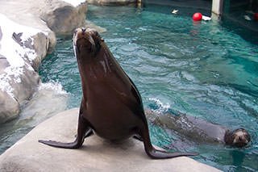

About Animal Antics
Animal Antics coaches a holistic approach to pet wellness to build better relationships between pets and people. We teach emotional well-being, proper nutrition and communication - the foundation for healthy physical and mental development for our animal companions.
At Animal Antics, we continually review scientific studies and journals to stay informed of new practices, developments, and breakthroughs in understanding animal behavior and optimizing natural nutritional health.
Founder
Diana Nichols Pappert, founder of Animal Antics, has worked with animals for over 25 years. She earned her Bachelors of Science in Environmental Biology and Psychology, with a special interest in Ethology, from the State University of New York at Brockport.
Diana is a TAG Teach-certified animal behavior consultant and an enthusiastic advocate of Clicker Training. She is a member and certified trainer of the Association of Pet Dog Trainers (APDT) and a founding and clinical member of the International Association of Animal Behavior Consultants (IAABC). She is also a member of the Animal Behavior Management Alliance, the Latham Foundation, Holistic Pet Care, ORCA and Cat Fancier's Association. Diana is also certified in Animal Nutrition.
Diverse training experiences have shaped Diana's skills as an animal behavior consultant. While working at the University of Rochester (NY) research lab, Diana trained ferrets to make visual discriminations. At the Seneca Park Zoo (Rochester, NY), she trained arctic foxes, sea lions, and orangutans in order to facilitate their management and care.
It was through the experience of training her 190lb English Mastiff, Shania, to overcome fear-aggression that Diana began to apply her scientific training to begin improving the lives and relationships of pets and their people.
Diana has fostered and raised many litters of various species and competes with her dogs and cats in shows highlighting conformation, agility, tracking, and search and rescue. She has also trained her own animals to participate in educational and therapy classes. Diana believes that animals are our best teachers.
Diana is a proud member of the following professional organzations: